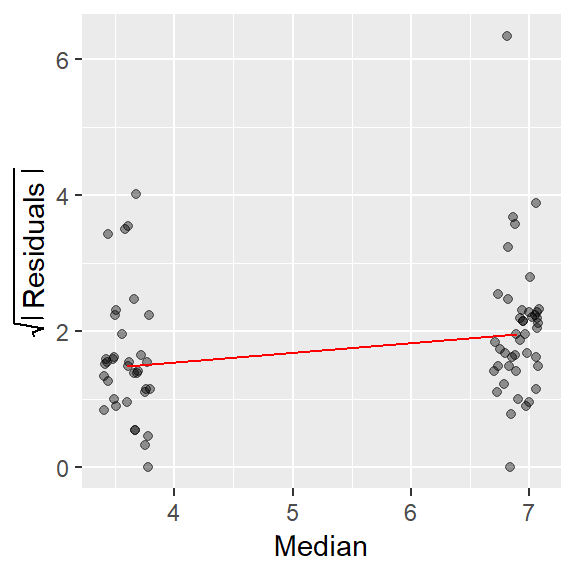
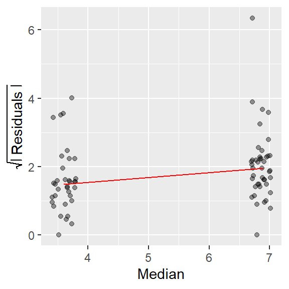
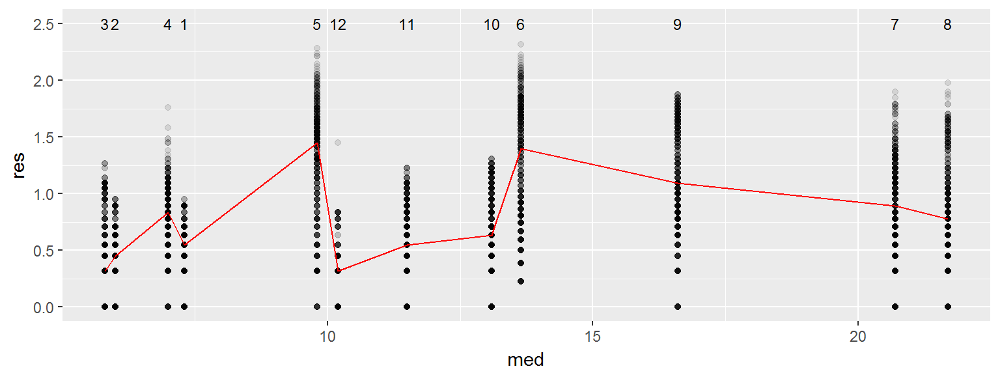
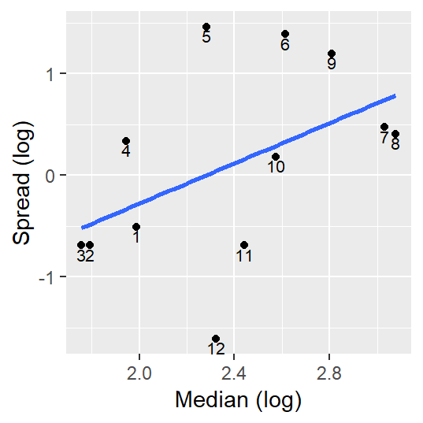

Spread-level plots
This tutorial makes use of the following R package(s): dplyr.
This material can be read in conjunction with pages 50 to 51 of Cleveland’s book.
Introduction
Some batches of data may show a systematic change in spread vs. location; a good example is stereogram fusion time data in Cleveland’s book where an increase in location translates into an increase in spread. Such dependency is often undesirable (e.g. in an ANOVA for instance) and preferably removed in an analysis. A plot well suited for visualizing this dependency is the spread-level plot, s-l (or spread-location plot as Cleveland calls it).
Constructing the s-l plot
The plot compares a measure of the spread’s residual to the location (usually the median) for each batch of data. The spread is usually distilled down to its residual (what remains after subtracting each batch value by the batch median) then transformed by taking the square root of its absolute value. The following block of code recreates the s-l plot in figure 2.25 from Cleveland’s book.
library(dplyr)
library(ggplot2)
df <- read.csv("http://mgimond.github.io/ES218/Data/fusion.csv")
# Create two new columns: group median and group residual
df1 <- df %>%
group_by(nv.vv) %>%
mutate( med = median(time),
res = sqrt( abs( time - med)))
# Compute the coordinate values needed to connect residual medians
sl.line <- df1 %>%
group_by(nv.vv) %>%
summarise(location = median(time),
res.med = median(res))
# Generate the s-l plot
ggplot(df1, aes(x=med, y=res)) + geom_jitter(alpha=0.4,width=0.2) +
geom_line(data=sl.line,aes(x=location,y=res.med), col="red")
The red line in the plot helps identify the type of relationship between spread and location (defined by the group median in this plot). If the line slopes upward, there is an increasing spread as a function of increasing location; if it slopes downward, there is a decreasing spread as a function of increasing location; and if the slope is flat, there is no change in spread as a function of location.
In the data fusion example, there is an obvious increase in spread as a function of location.
Other examples
Cleveland’s food web data
On page 60, Cleveland compares spread vs location for three different batches of values: two, three and mixed dimensional ecosystems. The values represent the mean chain length of a web (defined by the number of hierarchical prey-predator links in the web) for the three different ecosystem types.
df <- read.csv("http://mgimond.github.io/ES218/Data/Food_web.csv")
# Create two new columns: group median and group residual
df1 <- df %>%
group_by(dimension) %>%
mutate( med = median(mean.length),
res = sqrt( abs( mean.length - med))) %>%
ungroup() %>%
mutate( dimension = factor(dimension, levels=unique(dimension)))
# Compute the coordinate values needed to connect residual medians
sl.line <- df1 %>%
group_by(dimension) %>%
summarise(location = median(mean.length),
res.med = median(res))
# Generate the s-l plot
ggplot(df1, aes(x=med, y=res)) + geom_jitter(alpha=0.4,width=0.05,height=0) +
geom_line(data=sl.line,aes(x=location,y=res.med), col="red") +
annotate("text", x=sl.line$location, y=1.75, label=sl.line$dimension)
A monotonic spread is apparent in this dataset too, i.e. as the median chain length increases, so does the spread.
Buoy data
In this next example, we will compare water temperature spreads with median temperatures across 12 months using Gulf of Maine buoy data. Since we have many categories to work with, we will do without the jitter and stack the points within each month group.
df <- read.table("http://mgimond.github.io/ES218/Data/buoy_44005_2012.dat", header=T)
# Create two new columns: group median and group residual
df1 <- df %>%
group_by(MM) %>%
mutate( med = median(WTMP),
res = sqrt( abs( WTMP - med))) %>%
ungroup() %>%
arrange(med) %>%
mutate( MM = factor(MM, levels=unique(MM)))
# Compute the coordinate values needed to connect residual medians
sl.line <- df1 %>%
group_by(MM) %>%
summarise(location = median(WTMP),
res.med = median(res))
# Generate the s-l plot
ggplot(df1, aes(x=med, y=res)) + geom_point(alpha=0.1) +
geom_line(data=sl.line,aes(x=location,y=res.med), col="red") +
annotate("text", x=sl.line$location, y=2.5, label=sl.line$MM, cex=3)
Note that the discrete appearance of the values reflects the level of precision used to record water temperature data (a tenth of a degree Celsius). Unlike our previous two examples, a systematic spread as a function of increasing water temperature is not immediately apparent.
Variations of the S-L plot
Another version of the S-L plot (and one that seems to be the most popular) pits the log of the “hinges” spread vs the log of the median. This approach only works for positive values (this may require that values be adjusted so that the minimum value be no less than or equal to 0). This approach is appealing in that the slope of the best fit line can be used to come up with a power transformation (a topic covered in next week).
The hinges spread is similar to the interquartile range but because it is computed differently, it can take on slightly different values. The hinge is the half-way point between the most extreme value of a batch and the median. As such, there is a left hinge and a right hinge. Hinges (and other depths) are discussed in another section titled “Letter value summaries”.
The aforementioned s-l plot can be computed in R as follows (we will use the buoy data as an example).
sl <- df %>%
group_by(MM) %>%
summarise (level = log(median(WTMP)),
frth = (floor( (n()+1)/2) + 1)/2,
lower = sort(WTMP)[floor(frth)] ,
upper = sort(WTMP)[ceiling(n() + 1 - frth)],
sprd = log(upper - lower) )
plot(sprd ~ level, sl, pch=16, xlab="Median (log)", ylab="Spread (log)")
M <- lm(sprd ~ level, sl)
abline( M, col="red")
text(sl$level,sl$sprd, labels=sl$MM, pos=4, cex=0.6)
Note how this plot differs from Cleveland’s plot in that we are only displaying each month’s median spread value and we are fitting a straight line to the points.
The slope suggests that there may be a monotonic increase in spread vs location, but a close examination of the regression line indicates that the slope may not be significantly different from 0.
summary(M)
Call:
lm(formula = sprd ~ level, data = sl)
Residuals:
Min 1Q Median 3Q Max
-1.6491 -0.2979 -0.1910 0.6701 1.4585
Coefficients:
Estimate Std. Error t value Pr(>|t|)
(Intercept) -2.2585 1.4327 -1.576 0.146
level 0.9896 0.5907 1.675 0.125
Residual standard error: 0.8912 on 10 degrees of freedom
Multiple R-squared: 0.2192, Adjusted R-squared: 0.1411
F-statistic: 2.807 on 1 and 10 DF, p-value: 0.1248Accessing the custom ES218 S-L function
Note that a custom s-l function is available in the course ES218.R script file and can be invoked via a call to source("http://mgimond.github.io/ES218/es218.R").
We can simplify the last chunk of code as follows:
source("http://mgimond.github.io/ES218/es218.R")
df.sl <- sl( x=MM, y =WTMP, dat=df)
plot(sprd ~ med, df.sl, pch=16, xlab="Median (log)", ylab="Spread (log)")
M <- lm(sprd ~ med, df.sl)
abline( M, col="red")
text(df.sl$med, df.sl$sprd, labels=df.sl$grp, pos=4, cex=0.6)
 Manny Gimond (2017)
Manny Gimond (2017)